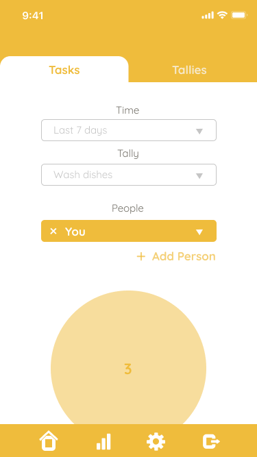
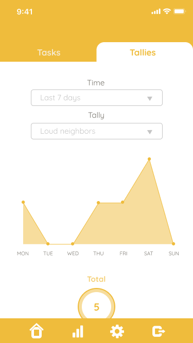
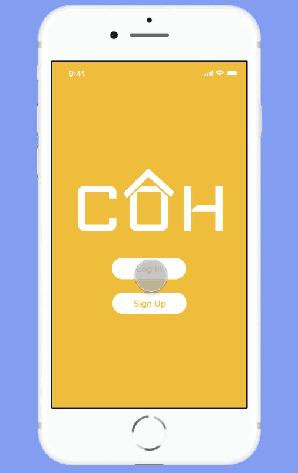
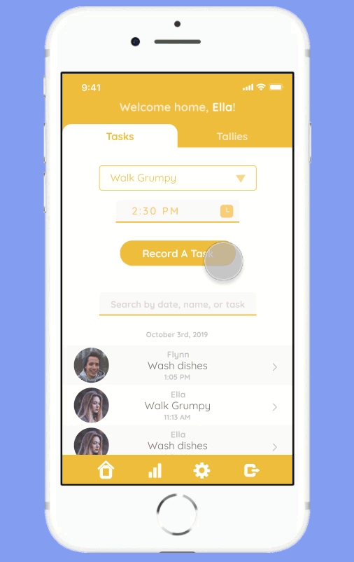
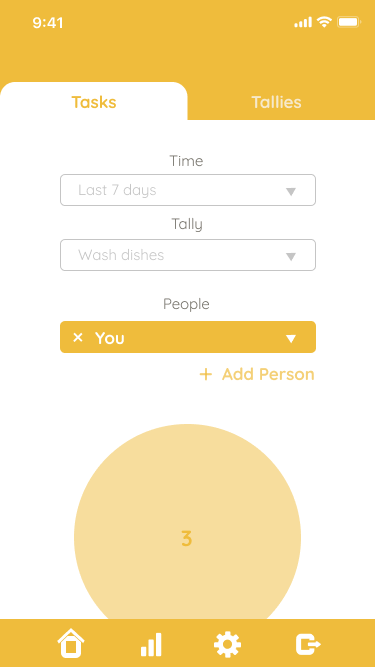
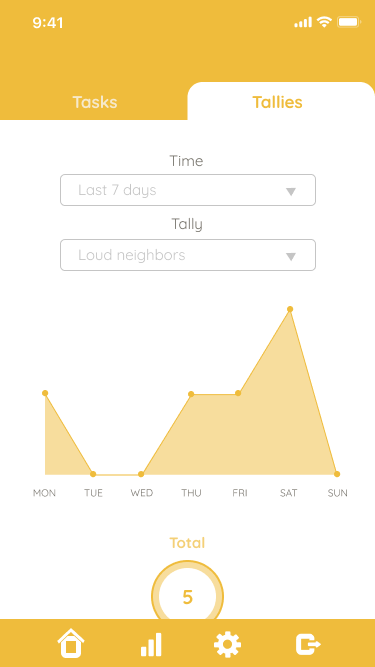
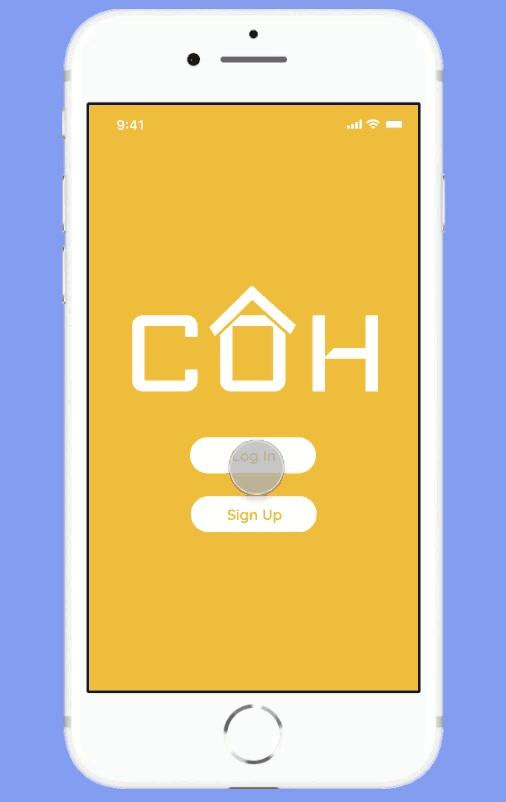
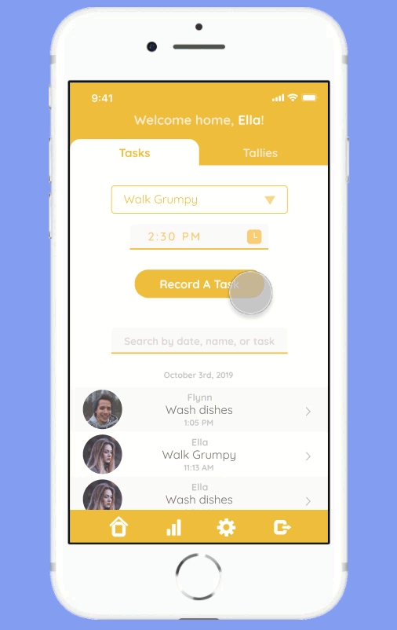
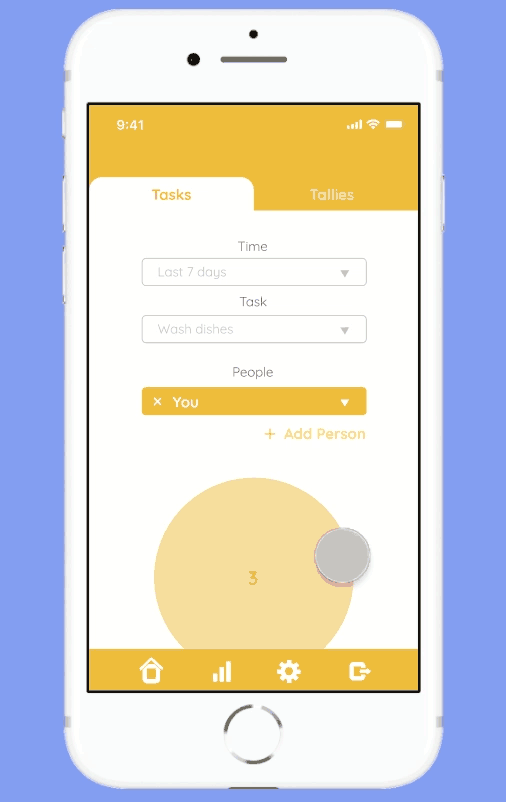

COH
"It's easier to live with COH."
The concept for COH originated in my CIS major capstone class. We were placed in project groups and tasked to manage, brainstorm, design, and develop a product. My role was lead designer and developer. By the end of the class, we had a working prototype for a web application. As a personal project, I decided to refine a UI design for a COH mobile app.
COH is a project management app—but for cohabitants instead of coworkers.
It improves communication by providing a spot to record and view tasks and tallies.
TASK :
an action your fellow cohabitants should know about
ex. walked dog, watered plants, washed dishes
TALLY :
a recurrence you and your fellow cohabitants want to keep track of
ex. loud neighbors, milk left out, dog pooped
 





